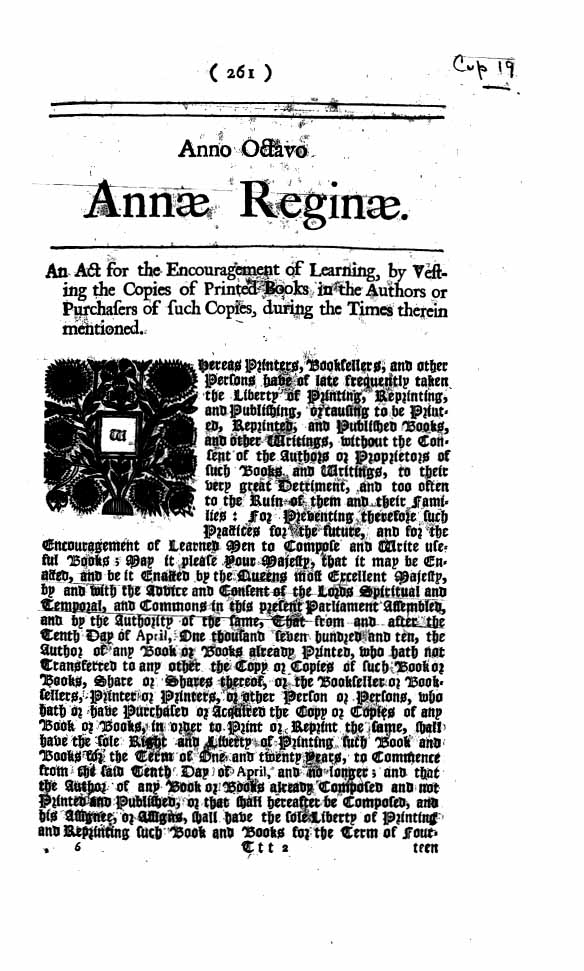

사상적배경
오픈소스의 사상적 배경-정보의 독점과 반독점 저항의 역사
오픈소스의 역사를 알기 이전에 우리는 저작권의 역사를 알 필요가 있다.
주의할 점은 오픈소스는 저작권이 없는
것이 아니라 오픈된 저작권을 갖고있을 뿐인 형태이라는 점이다. 즉, 원저작자의 모든것을 없는것 마냥 해버리지
않는다. 소프트웨어 개발에 있어 이러한 형태를 취하는 이유는 독점된 정보나 기술 때문에 발생하는 문제들이 과거
부터 있어 왔기 때문이다. 이는 윤리적, 나아가 인권문제까지 결부된다. 과거에 독점된 것들 때문에 어떤 문제가 발
생해왔는지를 알면 오픈소스의 개념을 습득하는데 도움이 된다.오늘날과 같이 넷을 통한 방대한 정보의 복사, 처
리가 불가능한 과거에서 정보의 확산은 물질화된 정보, 즉 종이에 인쇄된 형태로 사람 대 사람을 오가며 처리되었
다. 초기에는 사람의 손을 통한 필사로 복사된 종이들이 오갔고 당연히 그 속도는 느렸다. 그리고 목판인쇄(751년),
목판인쇄에서 활자인쇄(1377년)로 점점 복사의 효율이 높아지며 그 속도는 빨라져갔다.활자인쇄의 시작과 겹쳐 15세기 르네상스 시대 베네치아에서는 단테<신곡> 마키아벨리<군주론>과 같은 출판물 이 쏟아져 나왔고 봉건시대의 종말과 함께 힘이 약해져가는 왕과 교회였지만 그때까지만 해도 강성했던 그들은 이 출판물이라는 것에서 돈을 뜯을 수 있지 않을까 생각했다. 그들은 힘있는 발행인들과 결탁, 그들이 출판권리를 주 장하게하여 인쇄소에서 수수료를 뜯게 한 후 일부를 세금으로 받아챙겼다.
17세기에 이르러서야 근대적 저작권에 대한 개념이 정립되기 시작한다. ‘저작권’이라는 개념조차 없다가 이 시기에 본격적으로 논의 되기 시작한 것은 시대상과 중요하게 맞물린다. 당시 르네상스(15세기)를 시작으로 권리청원, 청 교도혁명, 명예혁명 같은 시민의 권리가 신장되면서 당시에는 구세력(교회, 왕)과 신세력(의회, 시민, 조합)이 뒤섞 여 사회의 각종 이권을 두고 싸우는 중이었다. 가장 중요한 이권은 역시 뭐니뭐니해도 돈, 즉 세금이었다.
혁명을 통해 빼앗은 왕과 교회의 권리 중 출판과 관련된 부분은 서적출판업조합(stationer’s company)가 가져갔다. 돈 맛을 본 조합의 횡포는 날이 갈수록 심해지고 출판사가 책을 내기 위한 수수료가 오르고, 사사건건 들어오는 제 약에 발행인들이 항의하는 등 여러 이권 단체의 목소리가 뒤섞이기 시작하자 의회는 원 저자의 권리가 포함된 법안(statue of anne)을 만든다.(1710년) 이것이 근대의 명문화된 저작권의 첫 시작이었다. 원저자의 저작권을 14년으로 하고 그후에는 저작권을 없애 발행인과 시민(구독자)의 불만도 어느정도 잠재우는 절 충된 안이었다.
 https://en.wikipedia.org/wiki/Statute_of_Anne 이후 출판물 뿐만이 아니라 기술에 대한 것(특허), 음악 재생에 대한 권리 등등으로 저작권의 영역이 점점 확장되어 갔다. 오늘날에 이르러 저작권은 지적재산권이라는 폭넓은 의미로 이름이 바뀌게 되었다. 물론 그간의 역사에서 저 작권 자체에 반대하는 목소리도 있었다. 가장 큰 목소리는 정보의 이용자들에게서 나왔다. 저작권의 역사에서 보듯 각종 힘있는 사회 집단끼리의 다툼에서 가장 큰 피를 본 것은 일반 시민들이었다. 출판사에 돈을 내고, 원저자에 돈 을 내고, 정부에 세금을 내는 것 모두 구독자들이었다. 이처럼 저작권 대 반 저작권 싸움은 언제나 힘 있는 소수와 힘 없는 다수의 대항 구조였다. 이들은 힘이 없었기에 목소리를 내지 못하다가 투표권을 얻게되면서 상황이 반전되 었다. 정치인들이 표를 얻기위해 이들의 목소리를 듣기 시작한 것이다.
19세기 초 헤겔을 시작으로 칼 마르크스, 엥겔스와 같은 사회주의, 무정부주의, 공산주의의 대두와 함께 노동자 운 동이 활발하게 전개되며 반 저작권에 대한 목소리도 커졌다. 지적재산 또한 모두가 공유하는 공공재가 되어야한다 는 것이 주요 논지였다. 그러나 공산주의 국가들의 몰락과 함께 이들의 목소리도 사그러들었다. 한편 자유주의 진 영에서는 거대 기업과 자본가들이 저작권을 갖고 정보와 기술을 독점하는 것에 대한 문제가 대두되었다. 이미 널리 퍼져있던 자동차 가솔린 엔진설계의 특허권(1911년)을 포드가 등록해버리자 라이선스가 없는 다른 회사들이 엔진 을 만들 수 없게되고 결국 다른 기업들이 소송을 진행했던 것이 한 사례로 남아있다.
여러가지 이념의 난립과 함께 1차세계대전을 거처 2차세계대전 동안 전쟁에서 승리하기위해 총동원된 국가의 생 산업체들이 전쟁물자를 신속히 생산하기위해선 기술들을 특허 관계없이 공유해야만 했고 이는 먼 훗날 카피레프 트 탄생의 신호탄이 되었다. 공공재로써의 정보가 사회전체의 이익임을 알게 된 것이다. 이는 포탄 탄도 계산과 적 국의 통신 암호를 해독하기 위한 고성능 연산장치의 개발에서도 마찬가지였다. 효율적이고 빠른 개발을 위해 컴퓨 터의 코드는 각 연구자들끼리 공유되는 퍼블릭 도메인이어야만 했다. 다만 오픈소스냐 아니냐는 따질 수 없었다. 컴퓨터 자체가 군내 연구소, 정부 내에서 은밀히 존재했기 때문이다. 애당초에 이들 존재 자체도 모두 기밀이었다. 전쟁이 끝나고(1951년) 기밀이 풀리자 군에 소속되어 연구하던 학자들도 대학, 기업으로 돌아갔고 이들 연구는 사 회내의 기업과 대학에서 다시 시작되었다. 특히 미국은 승전국의 지위를 이용해 독일 컴퓨터(콜로서스)의 기술을 몽땅 뺏어올 수 있었고 이를 토대로 IBM은 하드웨어의 성능을 점차 올려갔다. 하드웨어의 가격이 떨어지고 성능 또한 좋아지자 각 대학, 기업들도 워크스테이션을 들여오기 시작했다.
이로써 우리는 저작권의 역사에 대해서 알게 되었다. 다음 장서부터는 오픈소스 역사의 시작이라고도 할 수 있는 1950년대로 넘어가 연도별로 오픈소스의 역사에 대해서 알아보도록 하겠다.